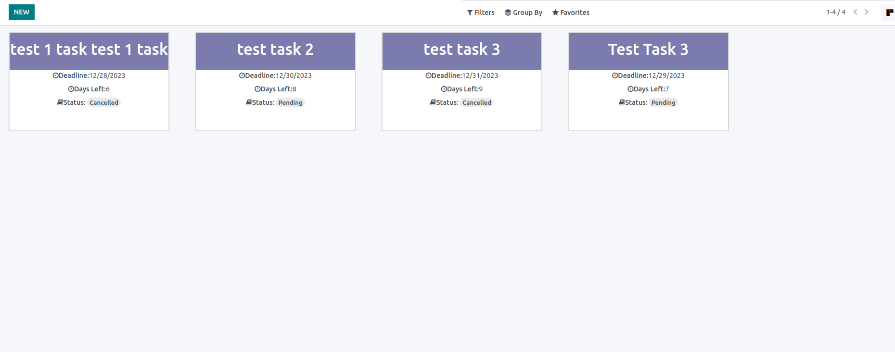

Install the Module and click on Menu:
click on New to create the task
You can see the default filter in kanban view to see only completed tasks
Create the Task by adding Data into fields
Your Tasks their Deadlines and time left in Deadlines are displayed

You can also filter to only See the completed tasks
<